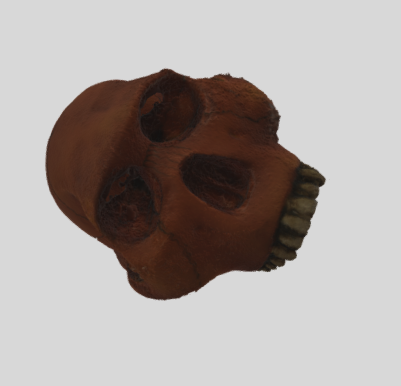

With iOS 12, you can place 3D objects in the real world using AR Quick Look, powered by ARKit 2. Tap any of the 3D models below on a device running iOS 12 to view the object and place it in AR. Or click a model on Mac to download the usdz file. First to try Skull_F.usdz
Now to try the scene only .reality file. It is stable
Now to try a multiscene realitycomposer file. tap cube to change scene
Now to try a the full project realitycomposer file